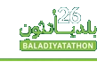

التحدي الثالث
مسار
قرار أوضح قبل بدء إغلاق الطريق.
حدّ معلن: نتائج النموذج توضيحية — لا قياسات ميدانية في الرياض.

github.com/NotMarwan/Baladiyathonقرار أوضح قبل بدء إغلاق الطريق.

github.com/NotMarwan/Baladiyathonالمشكلة
الحل
النموذج يعمل — لا شرائح
ما يميّزه فعلاً
النظام الذي يجيب دائماً يبدو أذكى — ويكون أخطر. مسار يعلن الامتناع ويسمّي الرقم الناقص وجهة جمعه.
توصية من امتنع عنها النظام — ٪ من المحفظة — لأن ترتيبها ينقلب داخل مظروف عدم اليقين المعلَن.
توصية بقيت مستقرة عبر المظروف كله، وهي وحدها ما يُعرض حكماً.
السؤال الذي لا يسأله أحد
تصريح BLD-2026-0045 · طريق الملك فهد — نسبة الحجم إلى السعة على البديل:
تحويل مركبة/ساعة. البديل لا يتحمّل — يتكوّن طابور، والتأخير ينتقل إلى البديل بدل أن يختفي.
من بديلاً يفيض — لا يحتمل الحركة المحوَّلة إليه.
يتحمّل · يقترب من طاقته · بلا بديل محسوب.
وسؤالٌ ثانٍ لم يكن له جواب — سأله ساكن
الشارع السكني حارةٌ واحدة بسعة مركبة/ساعة. حمل أكثر مقطعٍ سكني على البديل — الوسيط عبر المحفظة:
الحيّ لم يكن مزدحماً — الإغلاق هو ما أزدحمه. والأسوأ يبلغ ٪ من سعة الشارع.
من تصريحاً حُسب له بديل لا بديل مقبول له — كل مسار محسوب يدفع شارعاً سكنياً فوق سعته.
فقط يجنّب الحيّ · أنقذه توسيع البحث إلى أهداف التوجيه الخمسة كلها.
فالمخرَج هنا قرار لا مسار: نافذةٌ ليلية، أو إغلاقٌ جزئي، أو تنسيقٌ مع جهةٍ أخرى — لا توجيهُ الحركة إلى الحيّ بصمت.
ليس مرآةً لنفسه
أخذنا التغذية الحيّة لإدارة نقل ولاية واشنطن، وشغّلنا عليها محقّقنا نفسه ومخطط WZDx 4.2 الرسمي المثبَّت بالتزامه.
من أين تأتي أرقامنا
الرقم الكبير — وماذا يعني فعلاً
نقل نافذة العمل إلى الليل يخفض التأخير في نموذجنا بفارق كبير. وقِسنا من أين يأتي هذا الفارق بدل أن نتركه يُقرأ إنجازاً.
فرق نموذجي بين الجدول المقدَّم والأمثل — لا وفر مثبت.
معايير التحكيم
| المعيار | الدليل الحاضر | الحدّ المعلن |
|---|---|---|
| معالجة التحدي | قياس، مقارنة بدائل، توصية، وحمل البديل محسوب | لا قياس ميداني |
| الابتكار | الامتناع المعلن وسُلَّم الدليل — لا خريطة أجمل | نموذج لا منتج |
| قابلية التنفيذ | يعمل محلياً بلا مفاتيح · تصدير WZDx يُقرأ في أنظمة قائمة | مزوّد موصول |
| الأثر والاستدامة | بروتوكول تجربة ظل قابل للفشل — لا وعد | حالة ميدانية |
| جودة النموذج | حزمة و فحصاً تمرّ | تقطّع مرصود ومكتوب |
| العرض | كل رقم هنا مأخوذ من جرد مولَّد — لا رقم مكتوب يدوياً | — |
الخطوة التالية
فريق مسار